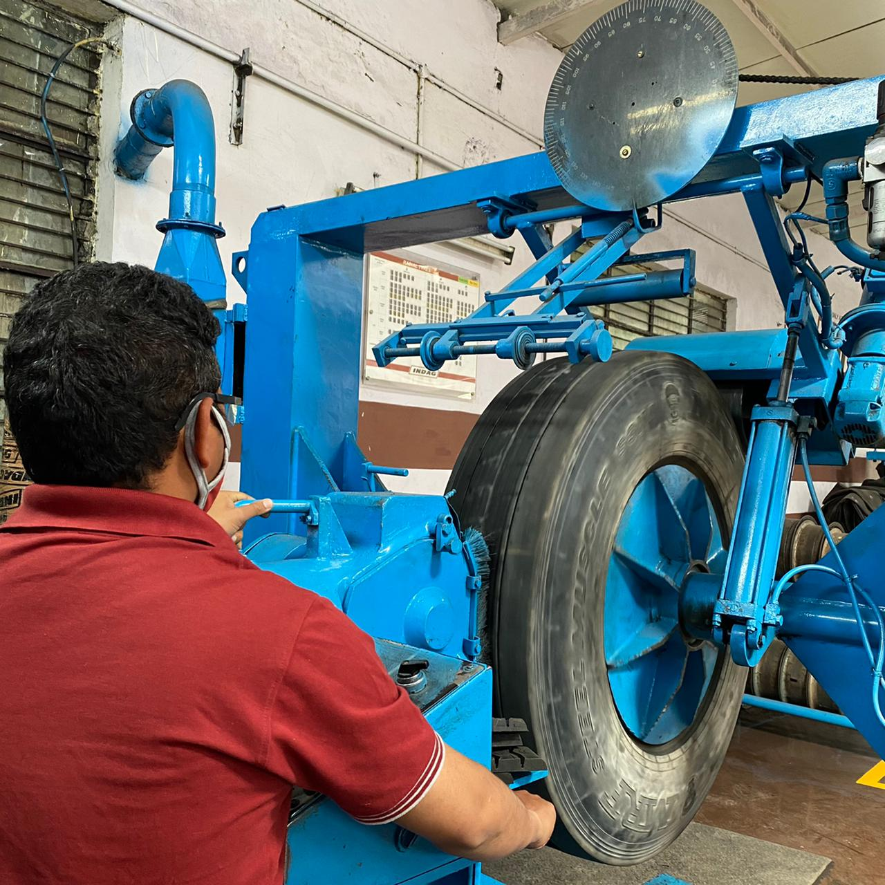
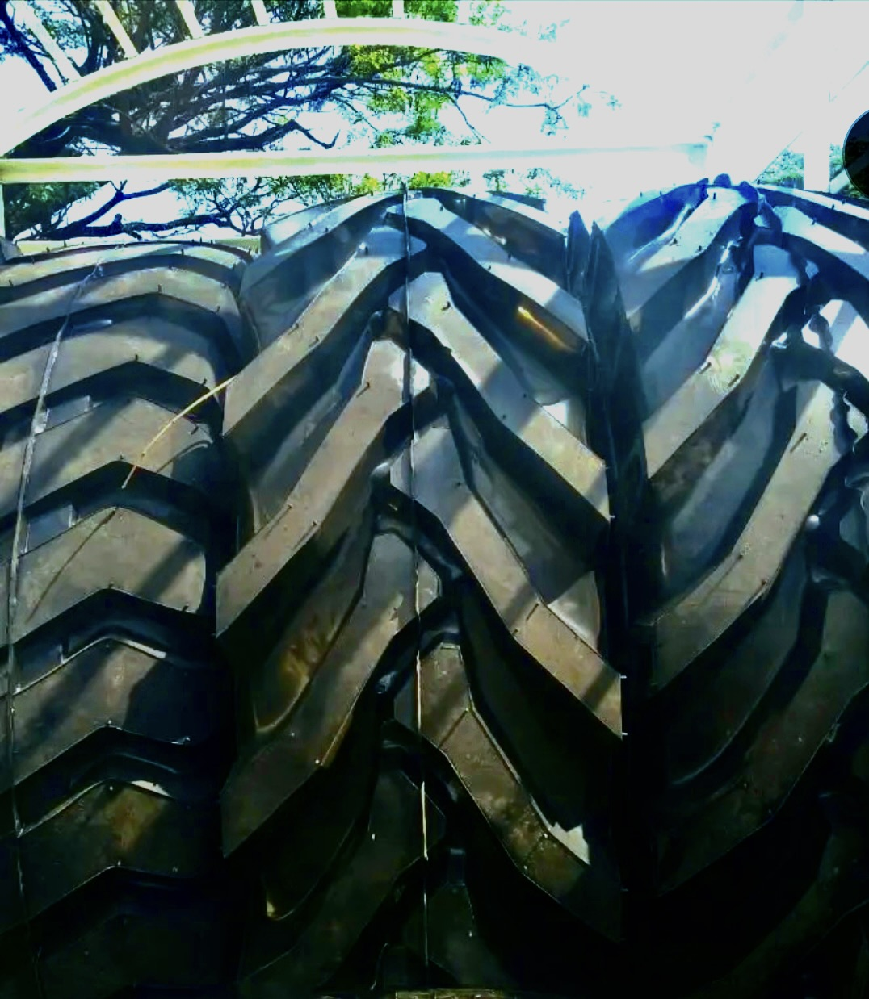

Trusted name in tyre retreading for over 6 years
To provide high-quality retreaded tyres that extend the life of your tyres and save you money while maintaining the highest standards of safety and reliability.
To be the leading tyre retreading service provider in Pune District, known for our quality, reliability, and customer satisfaction.
Jagadale Retreads has been a trusted name in the tyre retreading industry for over 6 years, offering durable and cost-effective solutions for commercial vehicles across Pune District. We are committed to providing high-quality retreaded tyres that extend the life of your tyres and save you money.
Our expert retreading team works tirelessly to ensure that our customers receive the best possible results. We have extensive experience in handling various retreading techniques. Our team is also trained to provide personalized advice and recommendations based on your specific vehicle needs.
Jagadale Retreads is a MRF Authorised Pre-treaders Near You, which means that our retreading services are genuinely guaranteed to be safe, efficient, and effective. We are committed to providing our customers with a smooth and enjoyable experience while retreading their tyres.


1. Initial Inspection
Objective: Evaluate the suitability of the tyre casing for
remolding.
Inspection:
Damage Assessment: Identify any cuts, punctures, or structural
weaknesses.
Compliance with Standards: Verify that the casing adheres to safety
and quality requirements.

2. Buffing
Objective: Remove the worn-out tread.
Process: The tyre is mounted on a buffing machine, which scrapes off
the old tread to prepare the surface for the new one.
Benefits: This process ensures the surface is clean and even,
providing a suitable base for the new tread.

3.Casing Repair (If Needed)
Objective: Repair minor defects in the casing.
Repairs: Small punctures or damages are repaired using patches or
fillers. The structural integrity of the tyre casing is ensured
after repairs.
4.Applying Bonding Agent:
Objective: Establish a robust bond between the existing casing and
the new tread.
Procedure: A layer of rubber cement or bonding adhesive is applied
to the polished surface of the casing.

5.Tread Application
Objective: Attach the newly manufactured tread material to the tyre
casing.
Preparations: Pre-cured tread designs (ready-made tread patterns) or
raw rubber strips are meticulously wrapped around the tyre. In the
instance of raw rubber, the tread pattern is established during the
curing process.

6.Enveloping and Mounting
Objective: Prepare the tyre for curing.
Procedure: The tyre is enclosed in an airtight envelope or fitted
with a rubber sleeve to ensure the formation of a secure bond
between the new tread and the rubber during curing.
7. Vulcanization (Curing)
Objective: Permanently adhere the newly installed tread to the
casing.
Procedure: The tyre is placed within a curing chamber or autoclave,
which is subjected to controlled temperatures, pressures, and
durations.
Process: Vulcanization strengthens the rubber and ensures the secure
attachment of the new tread.

8. Final Inspection
Objective: Ensure the remolded tyre conforms to established quality
standards.
Visual Inspection and Specialized Testing: The tyre undergoes a
comprehensive visual inspection, complemented by specialized
equipment, to assess its proper bonding, alignment, and uniformity.
Pressure Testing: Pressure testing is conducted to identify any air
leaks or structural anomalies.

9. Finishing
Objective: Smooth and refine the remolded tyre.
Procedure: Excess rubber or imperfections are trimmed, and the tyre
is cleaned and polished to achieve a polished and finished
appearance.

10.Quality Certification and Distribution
Objective: Certify remolded tyres for use.
Procedure: Each tyre is labeled with pertinent information,
including specifications and certifications. The tyres are packaged
and dispatched to customers or retailers.